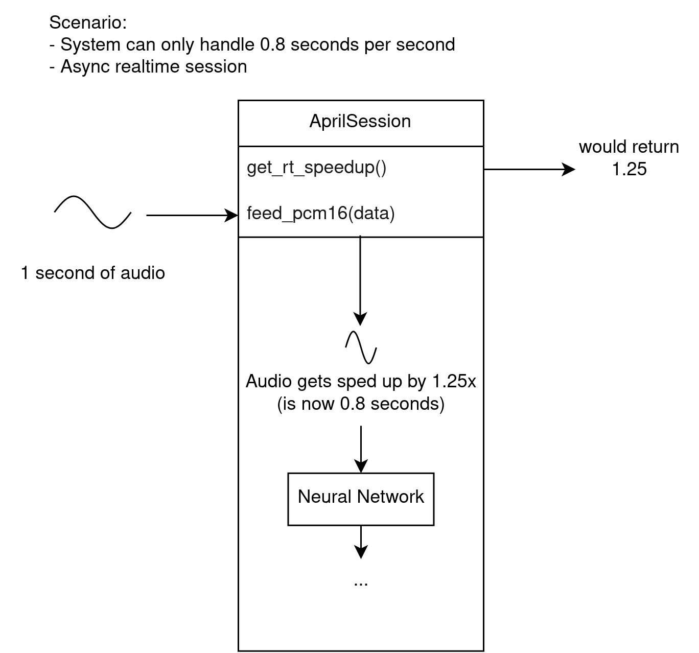
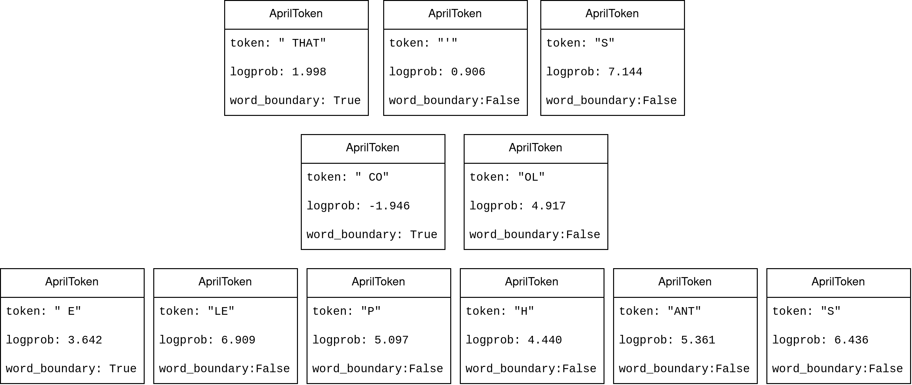

This library is currently facing some major rewrites over 2025 to improve efficiency and properly fulfill the API contract of multi-session support. The model format is going to change.
An example use of this library is provided in example.cpp. It can perform speech recognition on a wave file, or do streaming recognition by reading stdin.
It's built as the target main. After building aprilasr, you can run it like so:
$ ./main /path/to/file.wav /path/to/model.april
For streaming recognition, you can pipe parec into it. The command below will live caption your desktop audio.
For other platforms the script should be very similar, or visit https://github.com/microsoft/onnxruntime/releases/tag/v1.13.1 and download the right zip/tgz file for your platform and extract the contents to a directory named lib.
You may also define the env variable ONNX_ROOT containing a path to where you extracted the archive, if placing it in lib isn't a choice.
Create a folder called lib in the april-asr folder.
Download onnxruntime-win-x64-1.13.1.zip and extract the insides of the onnxruntime-win-x64-1.13.1 folder to the lib folder
Run cmake to configure and generate Visual Studio project files. Make sure you select x64 as the target if you have downloaded the x64 version of ONNXRuntime.
Open the ALL_BUILD.vcxproj and everything should build. The output will be in the Release or Debug folders.
When running main.exe you may receive an error message like this:
The application was unable to start correctly (0xc000007b)
To fix this, you need to make onnxruntime.dll available. One way to do this is to copy onnxruntime.dll from lib/lib/onnxruntime.dll to build/Debug and build/Release. You may need to distribute the dll together with your application.
Thanks to the k2-fsa/icefall contributors for creating the speech recognition recipes and models.
This project makes use of a few libraries:
pocketfft, authored by Martin Reinecke, Copyright (C) 2008-2018 Max-Planck-Society, licensed under BSD-3-Clause
Sonic library, authored by Bill Cox, Copyright (C) 2010 Bill Cox, licensed under Apache 2.0 license
tinycthread, authored by Marcus Geelnard and Evan Nemerson, licensed under zlib/libpng license
The bindings are based on the Vosk API bindings, which is another speech recognition library based on previous-generation Kaldi. Vosk is Copyright 2019 Alpha Cephei Inc. and licensed under the Apache 2.0 license.
To perform speech-to-text, feed PCM16 audio of the speech to the session through the feed_pcm16 method (or equivalent in the language). Make sure it's in the correct sample rate and mono.
PCM16 means array of shorts with values between -32768 to 32767, each one describing one sample.
After calling feed_pcm16, the session will invoke the neural network and call your specified handler with a result. You can present this result to the user or do whatever you want with the result.
In more advanced use cases, you may have multiple sessions performing recognition on multiple separate audio streams. When doing this, you can re-use the same model to minimize the memory use.
The simplest (and default) mode of operation are synchronous sessions.
In a synchronous session, when you call the function to feed audio, it will process the audio synchronously, call the handler if a new result is decoded, and finally return once it's done.
This means that calls to feed audio are extremely slow. This may be undesirable in some cases, such as in a live captioning situation. For this reason, you can choose to construct asynchronous sessions instead.
An asynchronous session does not perform calculations on the calling thread.
Calls to feed audio are quick, as it copies the data and triggers a second thread to do the actual calculations. The second thread calls the handler at some point, when processing is done.
A caveat is that you must feed audio at a rate that comes out to 1 second per second. You should not feed multiple seconds or minutes at once. The internal buffer cannot fit more than a few seconds.
Asynchronous sessions are intended for streaming audio as it comes in, for live captioning for example. If you feed more than 1 second every second, you will get poor results (if any).
In an asynchronous session, there is a problem that the system may not be fast enough to process audio at the rate that it's coming in. This is where realtime and non-realtime sessions differ in behavior.

A realtime session will work around this by automatically deciding to speed up incoming audio to a rate where the system can keep up. This involves some audio processing code, which may or may not be desirable.
Speeding up audio may reduce accuracy. It may not be severe at small values (such as 1.2x), but at larger values (such as over 2.0x) the accuracy may be severely impacted. There is a method you can call to get the current speedup value to know when this is happening, so you can display a warning to the user or similar.
A non-realtime session ignores this problem and assumes the system is fast enough. If this is not the case, the results will fall behind, the internal buffer will get full, ErrorCantKeepUp result will be called, and the results will be disastrously horrible.
The results are given via a callback (handler). It gets called by the session whenever it has new results. The parameters given to the callback include the result type and the token array.
Note that in an asynchronous session, the handler will be called from a different thread. Be sure to expect this and write thread-safe code, or use a synchronous session.
You should try to make your handler function fast to avoid slowing down the session.
The actual text can be extracted from the token array.
The handler gets called with an enum explaining the result type:
Partial Recognition - the token array is a partial result and an updated array will be given in the next call
Final Recognition - the token array is final, the next call will start from an empty array
Error Can't Keep Up - called in an asynchronous non-realtime session if the system is not fast enough, may also be called briefly in an asynchronous realtime session, the token array is empty or null
Silence - there has been silence, the token array is empty or null
A token may be a single letter, a word chunk, an entire word, punctuation, or other arbitrary set of characters.
To convert a token array to a string, simply concatenate the strings from each token. You don't need to add spaces between tokens, the tokens contain their own formatting.

For example, the text "THAT'S COOL ELEPHANTS" may be represented as tokens like so:
Simply concatenating these strings will give you the correct " THAT'S COOL ELEPHANTS", but with an extra space at the beginning. You may want to strip the final string to avoid the extra space.
Tokens contain more data than just the string however. They also contain the log probability, and a boolean denoting whether or not it's a word boundary. In English, the word boundary value is equivalent to checking if the first character is a space.
Before creating a session, define a handler callback. Here is an example handler function that concatenates the tokens to a string and prints it:
def handler(result_type, tokens):
s = ""
for token in tokens:
s = s + token.token
if result_type == april.Result.FINAL_RECOGNITION:
print("@"+s)
elif result_type == april.Result.PARTIAL_RECOGNITION:
print("-"+s)
else:
print("")
Most of the examples use a very simple method like this to load and feed audio:
with open(wav_file_path, "rb") as f:
data = f.read()
session.feed_pcm16(data)
This works only if the wav file is PCM16 and sampled in the correct sample rate. When you attempt to load an mp3, non-PCM16/non-16kHz wav file, or any other audio file in this way, you will likely get gibberish or no results.
To load more arbitrary audio files, you can use a Python library that handles audio loading (make sure librosa is installed: pip install librosa):
import librosa
# Load the audio samples as numpy floats
data, sr = librosa.load("/path/to/anything.mp3", sr=model.get_sample_rate(), mono=True)
# Convert the floats to PCM16 bytes
data = (data * 32767).astype("short").astype("<u2").tobytes()
session.feed_pcm16(data)
You can flush the session once the end of the file has been reached to force a final result:
Now, when feeding audio, be sure to feed it in realtime.
import librosa
import time
data, sr = librosa.load("/path/to/anything.mp3", sr=model.get_sample_rate(), mono=True)
data = (data * 32767).astype("short").astype("<u2").tobytes()
while len(data) > 0:
chunk = data[:2400]
data = data[2400:]
session.feed_pcm16(chunk)
if session.get_rt_speedup() > 1.5:
print("Warning: System can't keep up, realtime speedup value of " + str(session.get_rt_speedup()))
time.sleep(2400 / model.get_sample_rate())
import april_asr as april
import librosa
# Change these values
model_path = "aprilv0_en-us.april"
audio_path = "audio.wav"
model = april.Model(model_path)
def handler(result_type, tokens):
s = ""
for token in tokens:
s = s + token.token
if result_type == april.Result.FINAL_RECOGNITION:
print("@"+s)
elif result_type == april.Result.PARTIAL_RECOGNITION:
print("-"+s)
else:
print("")
session = april.Session(model, handler)
data, sr = librosa.load(audio_path, sr=model.get_sample_rate(), mono=True)
data = (data * 32767).astype("short").astype("<u2").tobytes()
session.feed_pcm16(data)
session.flush()
Congratulations! You have just performed speech recognition using AprilASR!
<!doctype html>
april_asr API documentation
Package april_asr
april_asr provides Python bindings for the aprilasr library.
aprilasr provides an API for offline streaming speech-to-text applications, and
enables low-latency on-device realtime speech recognition for live captioning
or other speech recognition use cases.
class Model:
"""
Models end with the file extension `.april`. You need to pass a path to
such a file to construct a Model type.
Each model has its own sample rate in which it expects audio. There is a
method to get the expected sample rate. Usually, this is 16000 Hz.
Models also have additional metadata such as name, description, language.
After loading a model, you can create one or more sessions that use the
model.
"""
def __init__(self, path: str):
self._handle = _c.ffi.aam_create_model(path)
if self._handle is None:
raise Exception("Failed to load model")
def get_name(self) -> str:
"""Get the name from the model's metadata"""
return _c.ffi.aam_get_name(self._handle)
def get_description(self) -> str:
"""Get the description from the model's metadata"""
return _c.ffi.aam_get_description(self._handle)
def get_language(self) -> str:
"""Get the language from the model's metadata"""
return _c.ffi.aam_get_language(self._handle)
def get_sample_rate(self) -> int:
"""Get the sample rate from the model's metadata"""
return _c.ffi.aam_get_sample_rate(self._handle)
def __del__(self):
_c.ffi.aam_free(self._handle)
self._handle = None</code></pre>
Models end with the file extension .april. You need to pass a path to
such a file to construct a Model type.
Each model has its own sample rate in which it expects audio. There is a
method to get the expected sample rate. Usually, this is 16000 Hz.
Models also have additional metadata such as name, description, language.
After loading a model, you can create one or more sessions that use the
model.
def get_description(self) -> str:
"""Get the description from the model's metadata"""
return _c.ffi.aam_get_description(self._handle)
Get the description from the model's metadata
def get_language(self) ‑> str
Expand source code
def get_language(self) -> str:
"""Get the language from the model's metadata"""
return _c.ffi.aam_get_language(self._handle)
Get the language from the model's metadata
def get_name(self) ‑> str
Expand source code
def get_name(self) -> str:
"""Get the name from the model's metadata"""
return _c.ffi.aam_get_name(self._handle)
Get the name from the model's metadata
def get_sample_rate(self) ‑> int
Expand source code
def get_sample_rate(self) -> int:
"""Get the sample rate from the model's metadata"""
return _c.ffi.aam_get_sample_rate(self._handle)
Get the sample rate from the model's metadata
class Result(*args, **kwds)
Expand source code
class Result(IntEnum):
"""
Result type that is passed to your handler
"""
PARTIAL_RECOGNITION = 1,
"""A partial recognition. The next handler call will contain an updated
list of tokens."""
FINAL_RECOGNITION = 2,
"""A final recognition. The next handler call will start from an empty
token list."""
ERROR_CANT_KEEP_UP = 3,
"""In an asynchronous session, this may be called when the system can't
keep up with the incoming audio, and samples have been dropped. The
accuracy will be affected. An empty token list is given"""
SILENCE = 4
"""Called after some silence. An empty token list is given"""</code></pre>
In an asynchronous session, this may be called when the system can't
keep up with the incoming audio, and samples have been dropped. The
accuracy will be affected. An empty token list is given
var FINAL_RECOGNITION
A final recognition. The next handler call will start from an empty
token list.
var PARTIAL_RECOGNITION
A partial recognition. The next handler call will contain an updated
list of tokens.
var SILENCE
Called after some silence. An empty token list is given
class Session:
"""
The session is what performs the actual speech recognition. It has
methods to input audio, and it calls your given handler with decoded
results.
You need to pass a Model when constructing a Session.
"""
def __init__(self,
model: Model,
callback: Callable[[Result, List[Token]], None],
asynchronous: bool = False,
no_rt: bool = False,
speaker_name: str = ""
):
config = _c.AprilConfig()
config.flags = _c.AprilConfigFlagBits()
if asynchronous and no_rt:
config.flags.value = 2
elif asynchronous:
config.flags.value = 1
else:
config.flags.value = 0
if speaker_name != "":
spkr_data = struct.pack("@q", hash(speaker_name)) * 2
config.speaker = _c.AprilSpeakerID.from_buffer_copy(spkr_data)
config.handler = _HANDLER
config.userdata = id(self)
self.model = model
self._handle = _c.ffi.aas_create_session(model._handle, config)
if self._handle is None:
raise Exception()
self.callback = callback
def get_rt_speedup(self) -> float:
"""
If the session is asynchronous and realtime, this will return a
positive float. A value below 1.0 means the session is keeping up, and
a value greater than 1.0 means the input audio is being sped up by that
factor in order to keep up. When the value is greater 1.0, the accuracy
is likely to be affected.
"""
return _c.ffi.aas_realtime_get_speedup(self._handle)
def feed_pcm16(self, data: bytes) -> None:
"""
Feed the given pcm16 samples in bytes to the session. If the session is
asynchronous, this will return immediately and queue the data for the
background thread to process. If the session is not asynchronous, this
will block your thread and potentially call the handler before
returning.
"""
_c.ffi.aas_feed_pcm16(self._handle, data)
def flush(self) -> None:
"""
Flush any remaining samples and force the session to produce a final
result.
"""
_c.ffi.aas_flush(self._handle)
def __del__(self):
_c.ffi.aas_free(self._handle)
self.model = None
self._handle = None</code></pre>
The session is what performs the actual speech recognition. It has
methods to input audio, and it calls your given handler with decoded
results.
You need to pass a Model when constructing a Session.
def feed_pcm16(self, data: bytes) -> None:
"""
Feed the given pcm16 samples in bytes to the session. If the session is
asynchronous, this will return immediately and queue the data for the
background thread to process. If the session is not asynchronous, this
will block your thread and potentially call the handler before
returning.
"""
_c.ffi.aas_feed_pcm16(self._handle, data)
Feed the given pcm16 samples in bytes to the session. If the session is
asynchronous, this will return immediately and queue the data for the
background thread to process. If the session is not asynchronous, this
will block your thread and potentially call the handler before
returning.
def flush(self) ‑> None
Expand source code
def flush(self) -> None:
"""
Flush any remaining samples and force the session to produce a final
result.
"""
_c.ffi.aas_flush(self._handle)
Flush any remaining samples and force the session to produce a final
result.
def get_rt_speedup(self) ‑> float
Expand source code
def get_rt_speedup(self) -> float:
"""
If the session is asynchronous and realtime, this will return a
positive float. A value below 1.0 means the session is keeping up, and
a value greater than 1.0 means the input audio is being sped up by that
factor in order to keep up. When the value is greater 1.0, the accuracy
is likely to be affected.
"""
return _c.ffi.aas_realtime_get_speedup(self._handle)
If the session is asynchronous and realtime, this will return a
positive float. A value below 1.0 means the session is keeping up, and
a value greater than 1.0 means the input audio is being sped up by that
factor in order to keep up. When the value is greater 1.0, the accuracy
is likely to be affected.
class Token(token)
Expand source code
class Token:
"""
A token may be a single letter, a word chunk, an entire word, punctuation,
or other arbitrary set of characters.
To convert a token array to a string, simply concatenate the strings from
each token. You don't need to add spaces between tokens, the tokens
contain their own formatting.
Tokens also contain the log probability, and a boolean denoting whether or
not it's a word boundary. In English, the word boundary value is equivalent
to checking if the first character is a space.
"""
token: str = ""
logprob: float = 0.0
word_boundary: bool = False
sentence_end: bool = False
time: float = 0.0
def __init__(self, token):
self.token = token.token.decode("utf-8")
self.logprob = token.logprob
self.word_boundary = (token.flags.value & 1) != 0
self.sentence_end = (token.flags.value & 2) != 0
self.time = float(token.time_ms) / 1000.0</code></pre>
A token may be a single letter, a word chunk, an entire word, punctuation,
or other arbitrary set of characters.
To convert a token array to a string, simply concatenate the strings from
each token. You don't need to add spaces between tokens, the tokens
contain their own formatting.
Tokens also contain the log probability, and a boolean denoting whether or
not it's a word boundary. In English, the word boundary value is equivalent
to checking if the first character is a space.
Most of the examples use a very simple method like this to load and feed audio:
// Read the file data (assumes wav file is 16-bit PCM wav)
var fileData = File.ReadAllBytes(wavFilePath);
short[] shorts = new short[fileData.Length / 2];
Buffer.BlockCopy(fileData, 0, shorts, 0, fileData.Length);
// Feed the data
session.FeedPCM16(shorts, shorts.Length);
This works only if the wav file is PCM16 and sampled in the correct sample rate. When you attempt to load an mp3, non-PCM16/non-16kHz wav file, or any other audio file in this way, you will likely get gibberish or no results.
using AprilAsr;
var modelPath = "aprilv0_en-us.april";
var wavFilePath = "audio.wav";
// Load the model and print metadata
var model = new AprilModel(modelPath);
Console.WriteLine("Name: " + model.Name);
Console.WriteLine("Description: " + model.Description);
Console.WriteLine("Language: " + model.Language);
// Create the session with an inline callback
var session = new AprilSession(model, (result, tokens) => {
string s = "";
if(result == AprilResultKind.PartialRecognition) {
s = "- ";
}else if(result == AprilResultKind.FinalRecognition) {
s = "@ ";
}else{
s = " ";
}
foreach(AprilToken token in tokens) {
s += token.Token;
}
Console.WriteLine(s);
});
// Read the file data (assumes wav file is 16-bit PCM wav)
var fileData = File.ReadAllBytes(wavFilePath);
short[] shorts = new short[fileData.Length / 2];
Buffer.BlockCopy(fileData, 0, shorts, 0, fileData.Length);
// Feed the data and flush
session.FeedPCM16(shorts, shorts.Length);
session.Flush();
Congratulations! You have just performed speech recognition using AprilAsr!
The session is what performs the actual speech recognition. It has methods to input audio, and it calls your given handler with decoded results. More...
A partial recognition. The next handler call will contain an updated list of tokens.
FinalRecognition
A final recognition. The next handler call will start from an empty token list.
ErrorCantKeepUp
In an asynchronous session, this may be called when the system can't keep up with the incoming audio, and samples have been dropped. The accuracy will be affected. An empty token list is given.
Silence
Called after some silence. An empty token list is given.